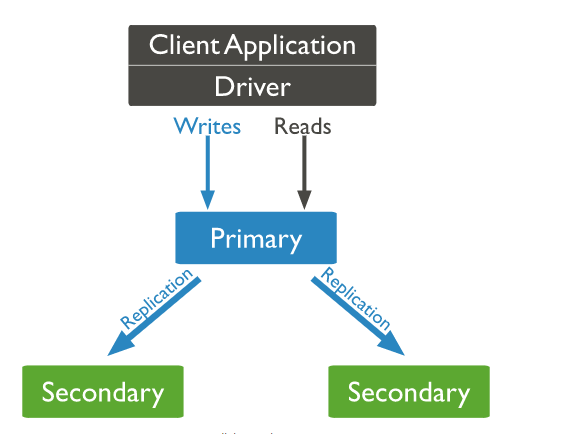
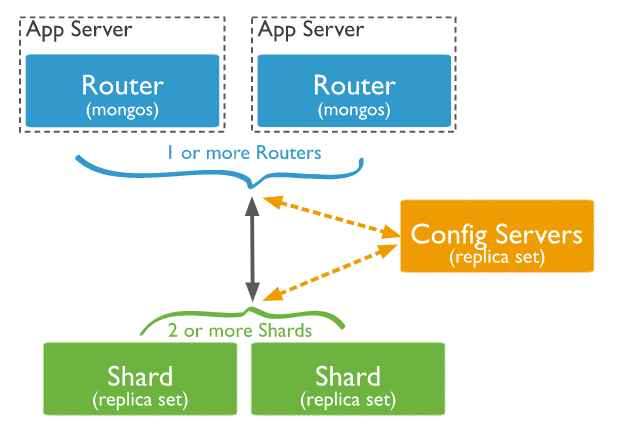

MongoDB
Some history
The initial development of MongoDB began in 2007 when the company was building a platform as a service similar to window azure.

The first ready production of MongoDB has been considered from version 1.4 which was released in March 2010.
MongoDB 4.0.9 - was the latest and stable version which was released on Apr 16, 2019.
Official site: https://www.mongodb.com/
RDMS vs MongoDB
| RDBMS | MongoDB |
|---|---|
| Database | Database |
| Table | Collection |
| Tuple/Row | Document |
| Column | Field |
| Primary Key | Primary Key (Default key _id provided by mongodb itself) |
{
_id: ObjectId(7df78ad8902c)
title: 'MongoDB Overview',
description: 'MongoDB is no sql database',
by: 'tutorials point',
url: 'http://www.tutorialspoint.com',
tags: ['mongodb', 'database', 'NoSQL'],
likes: 100,
comments: [
{
user:'user1',
message: 'My first comment',
dateCreated: new Date(2011,1,20,2,15),
like: 0
},
{
user:'user2',
message: 'My second comments',
dateCreated: new Date(2011,1,25,7,45),
like: 5
}
]
}Advantages of MongoDB over RDBMS
-
Schema less
-
No complex joins. Deep query-ability.
-
Ease of scale-out
-
Conversion/mapping of application objects to database objects not needed.
-
Uses internal memory for storing the (windowed) working set, enabling faster access of data.
Replication
Sharding
Why Use MongoDB?
-
Document Oriented Storage
-
Index on any attribute.
-
Replication and high availability.
-
Auto-sharding.
-
Rich queries.
-
Fast in-place updates.
-
Professional support by MongoDB.
Where Use MongoDB?
-
Big Data.
-
Content Management and Delivery.
-
Mobile and Social Infrastructure.
-
User Data Management.
-
Data Hub.